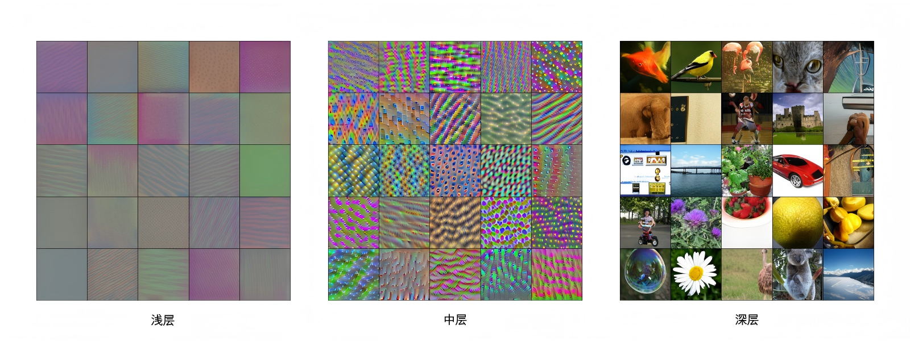

步骤： 将卷积核放在左上角，对应元素相乘再求和 → 输出特征图的第一个值。
然后滑动核（步长=1）继续向右，直到遍历整张图 → 生成特征图 (Feature Map)。卷积核就像是“模式探照灯”。
💡 浅层卷积核学习边缘/颜色 → 深层卷积核学习眼睛、车轮、文字局部 → 最终认出物体。

🎮 CNN Explainer — 交互式可视化工具
点击卷积层、池化层，观察特征图实时变化，调整核大小/步长，理解每一维变换。